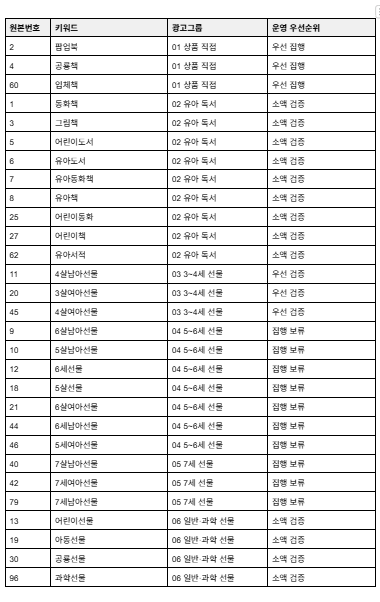
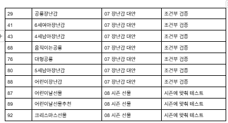

00하마북2026년 10~11월 실습 산출물 기준 · Meta 광고 집행 11월 4~11일
브랜드하마북은 아이가 좋아하는 이야기를 부모와 함께 펼치고 탐색하는 경험으로 전하는 가상 유아동 출판사다. 『펼쳐라, 공룡시대!』는 메인 팝업 6개와 미니 팝업 14개, 총 20개의 팝업이 들어 있는 공룡 팝업북이다. 정가는 33,000원이다.
상황 분석공룡을 좋아하는 아이에게 줄 책을 찾는 보호자는 표지와 소개 문구만 보고 아이가 이 책에도 흥미를 보일지 판단하기 어렵다.
| 전체 목표 (북극성 지표) | 시작 | 목표 | 결과 | 출처 |
|---|
| Meta 광고로 제품 랜딩페이지 방문을 유도하고, 구매 신청 폼 제출 완료를 핵심 전환으로 설정한다. | 집행 전 기준선 미확인. | 링크 CTR 5%, 구매 신청 CVR 2.00%. | 집행 기간 최초 유입 채널이 Paid Social인 신규 리드 7명. | 실측 GA4 신규 리드 보고서 · 11월 4~11일 발생 건 중 최초 유입 채널 Paid Social 기준. |
| 축 | 목표 | 핵심 지표 | 장표 |
|---|
| 콘텐츠 | 보호자가 책의 모습을 보고 아이가 흥미를 보일 만한 책인지 판단하도록 돕는다. | 링크 CTR | 03 |
| 퍼포먼스 | Meta 광고로 랜딩 방문을 유도하고 유입 비용과 구매 신청 성과를 파악한다. | 링크 CTR, 랜딩페이지 조회 수·조회당 비용, Paid Social 리드 수 | 04~06 |
| 그로스 | 랜딩에서 신청까지의 흐름을 파악하고, 첫 구매 고객이 시리즈의 다른 권을 구매하도록 CRM을 설계한다. | 채널별 신규 리드, 첫 배송 후 30일 내 활성 전환율 초기 목표 5%(가정) | 07~09 |
| 내 사이트 | 만든 방법 | 측정 연결 | 테스트한 것 |
|---|
| 하마북 랜딩페이지 | GitHub Pages로 제품 소개와 구매 신청 페이지 제작. | GA4에서 구매하기 버튼 클릭과 신청 폼 제출 완료를 구분해 기록. | 직접 테스트 신청을 제출해 GA4 기록 확인. |
강현주 · 하마북00
01콘텐츠‘공룡’에서 ‘공룡 팝업북’으로 콘텐츠 키워드 좁히기2026.10.20 조사 기록
Notion검색 의도 분석키워드 리서치
| 핵심 지표 | 시작 | 목표 | 결과 | 출처 |
|---|
| 월 검색량 | ‘공룡’ 24,400회 | ‘공룡 팝업북’ 선정 | ‘공룡 팝업북’ 120회 | 실측 2026.10.20 Notion 키워드 분석표(조사 기록) |
| 블로그 누적 발행량 | 동일 기준 수치 미기재 | ‘공룡 팝업북’ 선정 | ‘공룡 팝업북’ 11,400건 | 실측 2026.10.20 Notion 키워드 분석표(조사 기록) |
상황 분석『펼쳐라, 공룡시대!』를 소개할 검색 키워드가 필요했다. ‘공룡’에는 책 외에도 박물관·종류·게임을 찾는 수요가 섞여 있었다.
개선 목표공룡을 좋아하는 아이에게 줄 책을 찾는 보호자의 검색 의도에 맞는 콘텐츠 키워드를 선정한다.
가설공룡이라는 주제와 팝업북이라는 제품 형태가 함께 드러나는 검색어가 책을 찾는 보호자의 의도에 더 가까울 것으로 봤다.
실행‘공룡’, ‘팝업북’, ‘동화책’에서 세부 검색어를 조사했다. 월 검색량과 블로그 발행량을 확인하고, 하마북 제품과 직접 연결되는 검색어를 추렸다.
결과『펼쳐라, 공룡시대!』 소개 콘텐츠에 활용할 키워드 후보로 ‘공룡 팝업북’을 선정했다. 검색 유입 성과는 미측정이다.
재분석‘공룡’은 검색 수요가 컸지만 제품과 무관한 의도도 섞여 있었다. ‘공룡 팝업북’은 수요 규모가 작아도 책을 찾는 상황이 더 구체적이어서 제품 소개 콘텐츠에 적합하다고 판단했다.
다음 목표 예상‘공룡 팝업북’을 활용한 소개 콘텐츠를 발행하고, 검색 노출과 클릭의 기준선을 확보한다.
강현주 · 하마북01
02콘텐츠AI 검색에서 팝업북 추천 기준 비교2026.10.22 조사 기록
네이버 AI 브리핑구글 AI 개요NotionAI 검색 분석인용 출처 분석
| 핵심 지표 | 시작 | 목표 | 결과 | 출처 |
|---|
| 추천 기준·제공 정보 | 네이버는 연령과 관심사를 중심으로 추천했다. | 구글은 개별 도서의 특징과 가격 비교를 중심으로 보여줬다. | 하마북 추천·인용률은 미측정이다. | 미측정 AI 검색 비교 조사 |
| 네이버 인용 중 도서관 출처 | 모름 | 출처 유형 파악 | 9개 중 4개 | 실측 캡처에서 확인 |
상황 분석01장에서 ‘공룡 팝업북’을 제품 소개 키워드 후보로 골랐다. 이어 보호자가 책 추천을 요청했을 때, AI가 어떤 정보를 제공하는지 살펴봤다.
개선 목표AI 추천 답변을 비교해 『펼쳐라, 공룡시대!』 상세페이지에 보강할 정보를 찾는다.
가설같은 질문에도 서비스별로 추천 근거가 다를 수 있으며, 답변을 비교하면 책을 고를 때 참고할 정보를 파악할 수 있을 것이다.
실행‘어린이 팝업북 추천’이라는 동일한 일반 질문으로 네이버 AI 브리핑과 구글 AI 개요의 추천 기준, 제공 정보, 인용 출처를 비교했다.
결과네이버는 아이의 연령과 관심사를, 구글은 개별 도서의 특징과 가격 비교를 중심으로 보여줬다. 네이버 답변에서 확인한 인용 9개 중 4개는 도서관 출처였다. 하마북 추천·인용률은 미측정이다.
재분석보호자가 책이 아이에게 맞는지 판단할 수 있도록 대상 연령과 팝업이 펼쳐지는 방식을 상세페이지에 보강할 항목으로 정했다. 페이지 반영은 계획 단계다.
다음 목표 예상상세페이지에 두 항목을 반영한 뒤 같은 질문으로 다시 검색하고, 하마북 또는 도서가 언급되거나 자사 페이지가 인용되는지 기록한다.
강현주 · 하마북02
03콘텐츠공룡 팝업북의 매력을 두 가지 광고 소재로 표현Meta 광고 집행 2026.11.04~11.11
ChatGPTFigmaMeta 광고 관리자광고 소재 기획카피·이미지 구성
| 핵심 지표 | 시작 | 목표 | 결과 | 출처 |
|---|
| 링크 CTR | 집행 전 기준선 미확인 | 캠페인 목표 5% | 팝업 강조 7.60%, 아빠·아이 7.58% | 실측 Meta 광고 관리자 노출·링크 클릭으로 계산 |
상황 분석공룡을 좋아하는 아이에게 줄 책을 찾는 보호자는 아이가 책에 흥미를 보일지 판단하기 어렵다. 광고에서 공룡 팝업의 입체감과 부모·아이가 함께 책을 즐기는 모습을 보여주고자 했다.
개선 목표보호자가 책의 모습을 보고 아이가 흥미를 보일 만한 책인지 판단하도록 돕고, 제품 상세페이지 방문을 유도한다.
가설공룡 팝업이 크게 펼쳐진 장면을 보여주면 보호자가 아이의 반응을 상상하기 쉬워져, 아빠와 아이가 함께 읽는 장면보다 더 많은 랜딩페이지 조회로 이어질 것으로 예상했다.
실행ChatGPT로 광고 이미지 2종을 제작하고 Figma에서 각 이미지에 카피를 배치했다. 첫 번째 소재는 아이의 시점에서 공룡 팝업이 크게 펼쳐지는 모습을, 두 번째 소재는 아빠와 아이가 주말에 함께 책을 펼치는 모습을 보여줬다.
재분석60%, 아빠·아이 소재는 7. 58%였다. 팝업 강조 소재의 랜딩페이지 조회가 더 많았지만, 노출 규모에 차이가 컸고 두 소재의 이미지와 카피도 함께 달라 어떤 요소가 반응 차이를 만들었는지는 확인하기 어려웠다.
다음 목표 예상같은 이미지에서 카피 한 요소만 바꾸고 두 버전에 같은 예산을 배정한다. 링크 CTR을 주 지표로 비교하고, 구매 신청 CVR도 함께 확인한다. 비교할 카피는 미정이다.
강현주 · 하마북03
04퍼포먼스출판을 가정한 월 500만 원 매체별 예산 배분2026.11.02 예산 배분 시트 작성 기록
Google Sheets매체 전략예산 설계
| 핵심 지표 | 시작 | 목표 | 결과 | 출처 |
|---|
| 예상 구매 완료 건수 | 미측정 | 사전 건수 목표 미확인 | 예상 약 487건 | 가정 예산 배분 시트 |
| 예상 ROAS | 미측정 | 235% | 예상 322% | 가정 예산 배분 시트 |
상황 분석『펼쳐라, 공룡시대!』가 출판됐을 때, 팝업북을 검색하는 보호자와 소셜에서 책을 처음 발견하는 보호자에게 각각 어떤 매체로 접근할지 검토했다.
개선 목표도서가 출판·판매됐다고 가정하고, 월 500만 원을 매체와 타깃별로 배분해 예상 구매와 광고 효율을 비교한다.
가설도서를 직접 검색하는 보호자와 아직 제품을 모르는 보호자의 유입 상황에 맞춰 검색광고와 소셜 광고의 역할을 나누면 매체별 예산 배분 근거를 세울 수 있을 것으로 봤다.
실행네이버 검색광고·디스플레이 광고에 각각 100만 원, Meta 핵심·유사 타깃에 각각 150만 원을 배정했다. 매체별 과금 방식과 단가, 공통 링크 CTR 2.0%, 구매 완료 CVR 2.5%, 객단가 33,000원(가정)을 적용했다.
결과월 500만 원 배분안에서 예상 구매 완료 약 487건, 예상 매출 16,075,000원, 예상 CPA 10,264원, 예상 ROAS 322%를 산출했다(시뮬레이션).
재분석예상 효율은 매체별 단가와 공통 CVR 가정에 따라 달라진다. 이 장의 전환은 출판·판매를 전제로 한 구매 완료다. 00·05장의 실집행에서는 가상 도서의 구매 신청 폼 제출 완료를 전환으로 측정했다.
다음 목표 예상실제 집행의 클릭당 비용과 신청 전환율로 리드 수집 예산을 다시 계산한다. 실제 판매 데이터를 확보하면 구매 완료 CVR을 갱신한다.
강현주 · 하마북04
05퍼포먼스Meta 유입 설계와 랜딩 첫 화면 개선Meta 실제 집행 2026.11.04~11.11. 랜딩 카피·대표 이미지 수정은 11.04 이전.
Meta 광고 관리자GA4GitHub Pages광고 성과 분석랜딩 개선
| 핵심 지표 | 시작 | 목표 | 결과 | 출처 |
|---|
| 링크 CTR | 집행 전 기준선 미확인 | 5.00% | 7.60% · 목표 대비 +2.60%p | 실측 Meta 광고 관리자 · 노출 4,224회·링크 클릭 321회 · 랜딩페이지 조회 316회·조회당 90원 |
| 구매 신청 CVR | 집행 전 기준선 미확인 | 2.00% | Paid Social 세션 기준 2.10% · 목표 대비 +0.10%p | 실측 GA4 트래픽 획득·리드 획득 · 최초 유입 Paid Social 신규 리드 7명 |
상황 분석광고에선 입체 공룡 팝업을 강조했지만, 랜딩 첫 화면의 닫힌 표지와 기존 카피에서는 책의 강점이 바로 보이지 않았다.
개선 목표광고로 책을 더 알아보려는 보호자를 랜딩에 유도하고, 첫 화면에서 팝업의 특징을 바로 보여준다.
가설공룡 팝업이 펼쳐진 모습을 크게 보여주는 소재가 아빠와 아이가 함께 읽는 장면을 보여주는 소재보다 랜딩 조회를 더 많이 얻을 것으로 예상했다.
실행아빠 페르소나를 바탕으로 카피를 정하고, 펼친 팝업이 보이는 대표 이미지로 바꿔 랜딩에 직접 반영했다. 팝업 강조와 아빠·아이의 시간이라는 두 소재로 Meta 광고를 집행했다.
결과11월 4~11일 Meta 광고를 집행해 링크 CTR 7.60%와 랜딩페이지 조회 316회를 기록했다. GA4에서 Paid Social 세션의 구매 신청 CVR은 2.10%로 목표 2.00%를 초과했다. 같은 기간 최초 유입 채널이 Paid Social인 신규 리드는 7명이었다. 총 지출 28,436원.
재분석팝업 강조 소재는 지출과 노출 규모가 더 컸고 랜딩 조회도 많았다. 두 소재의 링크 CTR은 7.60%와 7.58%로 비슷했다. Paid Social CVR은 세션 단위, 신규 리드는 최초 유입 채널 기준 사용자 단위다. 랜딩 수정 전후 CVR은 미확인.
다음 목표 예상같은 이미지에서 카피 한 요소만 바꾸고 두 버전에 같은 예산을 배정한다. 링크 CTR을 주 지표로 비교하고, 구매 신청 CVR도 함께 확인한다.
강현주 · 하마북05
06퍼포먼스네이버 파워링크 키워드 운영안 설계2026.10~11 실습 기록, 정확한 기간 미확인
네이버 검색광고Google SheetsGoogle Docs검색광고 기획키워드 분류
| 핵심 지표 | 시작 | 목표 | 결과 | 출처 |
|---|
| 키워드 후보 | 원본 100개 검토 | 후보 39개 선별 | 8개 광고그룹 분류 · 후보 중 10개 집행 보류 | 실측 운영안 |
상황 분석‘공룡’ 관련 검색어에는 책을 찾는 의도 외에도 공룡 지식, 장난감, 나들이 정보를 찾는 의도가 섞여 있었다. 『펼쳐라, 공룡시대!』와 연결할 검색어를 추려 광고그룹을 설계할 필요가 있었다.
개선 목표원본 검색어 100개에서 제품과 관련된 후보를 선별하고, 검색 의도별 광고그룹과 문구를 설계한다.
실행검색 의도와 제품 적합성을 기준으로 100개를 검토했다. 선별한 39개를 상품 직접 검색, 유아 독서, 연령별 선물 등 8개 그룹으로 나누고, 그룹별 광고 문구와 운영 조건을 정리했다.
증거

결과후보 중 5~6세·7세 선물 키워드 10개는 운영안에서 집행 보류로 표시했다. 운영안 작성 완료. 광고 미집행, 성과 미측정.
재분석예상 노출이 큰 검색어에도 여러 목적이 섞일 수 있어, 노출 규모와 제품 적합성을 함께 봐야 한다. 견적에 표시된 예상 클릭과 CPC는 집행 후 확인할 참고값으로 두었다.
다음 목표 예상집행할 경우 검색어별 클릭과 CPC를 확인하고, 어떤 검색 의도가 랜딩 방문과 구매 신청으로 이어지는지 비교한다.
강현주 · 하마북06
07그로스GA4로 랜딩 구매 신청 흐름 측정2026.10.28 이벤트 설계서 작성
GA4GitHub Pages이벤트 설계퍼널 분석
| 핵심 지표 | 시작 | 목표 | 결과 | 출처 |
|---|
| 구매 신청 흐름 | 구매하기 버튼 클릭 | 폼 입력 시작 | 구매 신청 완료 · 단계별 전환율 | 미측정 GA4 이벤트 설계서 |
상황 분석랜딩 방문과 구매 신청 사이의 흐름을 파악하려면 구매하기 버튼을 누른 행동과 폼을 제출한 행동을 각각 기록할 필요가 있었다.
개선 목표제품 조회부터 구매 신청 완료까지 단계별로 측정할 수 있도록 이벤트를 정의하고, 제출 완료가 GA4에 기록되는지 확인한다.
가설버튼 클릭, 폼 입력 시작, 제출 완료를 각각 기록하면 방문자가 구매 신청 과정의 어느 단계에서 이탈하는지 파악할 수 있을 것이다.
실행제품 조회(view_item), 구매하기 버튼 클릭(cta_click), 폼 입력 시작(form_start), 구매 신청 완료(generate_lead)의 발생 조건을 직접 정의해 사이트에 반영했다. 제품 조회부터 폼 제출까지 직접 테스트했다.
결과테스트 과정에서 네 이벤트가 모두 GA4에 기록되는 것을 확인했다. 실제 방문자의 단계별 전환율과 이탈률은 추가 분석 과제로 남겼다.
재분석구매하기 버튼을 누른 뒤 폼 입력과 제출까지 이어졌는지 보려면 각 단계의 이벤트를 구분해 확인해야 한다.
다음 목표 예상동일한 기간과 세션 기준으로 단계별 전환율을 확인해, 가장 많이 이탈하는 구간부터 개선한다.
강현주 · 하마북07
08그로스Looker Studio로 광고 소재별 반응 비교2026.11.06 제작 · 대시보드 초안 조회 범위 11.03~11.05
Looker StudioMeta 광고 관리자GA4대시보드 제작지표 해석
| 핵심 지표 | 시작 | 목표 | 결과 | 출처 |
|---|
| 소재별 광고·신청 지표 | 중간 집행 데이터 | 링크 CTR 5.00% · 구매 신청 CVR 2.00% | 노출·링크 클릭·링크 CTR·랜딩페이지 조회·조회당 비용 · Paid Social 구매 신청 CVR | 미측정 Looker Studio · Meta 광고 관리자 · GA4 |
상황 분석Meta에서 두 소재의 노출 수가 크게 달랐다. 클릭 수와 함께 노출 대비 반응을 봐야 소재별 결과를 해석할 수 있었다.
개선 목표소재별 노출·링크 클릭·링크 CTR을 한 화면에서 비교한다.
가설노출·클릭 수와 링크 CTR을 함께 보면 노출 규모와 클릭 반응을 구분할 수 있다.
실행Looker Studio에서 Meta 광고의 지출·노출·링크 클릭·랜딩페이지 조회와 GA4의 광고 유입 세션·상품 조회·신청 완료 지표를 한 화면에 구성했다. 소재와 날짜를 선택해 결과를 비교할 수 있도록 했다.
결과중간 집행 화면에서 팝업 강조 소재는 노출 282회, 링크 클릭 27회, 랜딩페이지 조회 26회를 기록했다. 아빠·아이 소재는 노출 2회였다.
재분석중간 집행 당시 두 소재의 노출 규모 차이가 커 반응을 비교하기 어려웠다.
다음 목표 예상11월 4~11일 전체 집행 데이터를 반영해 소재별 노출·링크 CTR·랜딩 조회당 비용을 비교하고, GA4의 Paid Social 구매 신청 CVR을 함께 표시한다. 구매 신청 성과를 중심으로 대시보드 목표 지표를 정리한다.
강현주 · 하마북08
09그로스첫 배송부터 시리즈 후속 구매까지 CRM 설계2026년 11월, 수정본 확인 11월 12일
Google DocsCRM 세그먼트 설계캠페인 KPI 설계
| 핵심 지표 | 시작 | 목표 | 결과 | 출처 |
|---|
| 첫 배송 후 30일 내 신규 고객 활성 전환율 | 미측정 | 5.00% | 미측정 | 가정 첫 배송 고객의 20%가 다른 권의 상세페이지를 보고, 그중 25%가 결제한다고 가정했다. |
상황 분석부모가 아이에게 직접 책을 읽어줄 수 있어, 설문 응답이나 QR 이용 기록만으로는 첫 책을 경험한 고객이 시리즈에 계속 관심을 보이는지 파악하기 어려웠다.
개선 목표첫 배송 이후 고객의 활성화 기준을 정하고, 신규·활성·휴면 고객별로 메시지와 발송 조건을 설계한다.
가설배송 직후 아이와 함께 책을 즐기는 방법을 안내하고 이후 시리즈의 다른 권을 소개하면, 첫 배송 후 30일 이내 후속 구매를 유도할 수 있을 것으로 봤다.
실행도서가 판매됐다고 가정했다. 첫 배송 이후 별도 주문에서 시리즈 내 미구매 권을 처음 결제한 시점을 활성화 기준으로 정했다. 가정 고객 300명을 상태별로 분류하고, 신규 온보딩·활성 유지·휴면 재활성화 메시지를 설계했다.
결과고객 분류 기준, 캠페인별 메시지와 발송 조건, 성과 측정 기준을 설계서로 정리했다.
재분석후속 구매는 주문·도서 ID와 결제 시각으로 확인하도록 했다. 캠페인은 설계 단계이며 실제 성과는 미측정이다.
다음 목표 예상첫 배송 고객을 코호트로 묶어 30일 내 활성 전환율을 측정하고, 상세페이지 조회와 결제 단계의 실제 데이터를 바탕으로 초기 목표를 조정한다.
강현주 · 하마북09
10전체 결과와 다음 목표2026.11.04~11.11 · 광고비 28,436원 · 랜딩페이지 조회 316회
| 전체 목표 (북극성 지표) | 시작 | 목표 | 결과 | 출처 |
|---|
| 링크 CTR · 구매 신청 CVR · 구매 신청 리드 | 집행 전 기준선 미확인. | 링크 CTR 5.00% · 구매 신청 CVR 2.00% · 리드 수집 | 링크 CTR 7.60% · 구매 신청 CVR 2.10% · 최초 유입 Paid Social 신규 리드 7명 | 실측 Meta 광고 관리자 · GA4 트래픽 획득·리드 획득 |
| 축 | 결과 | 재분석 |
|---|
| 콘텐츠 | 검색어와 AI 추천 답변을 조사하고, 공룡 팝업의 입체감과 아빠·아이의 공동 탐색을 각각 강조한 소재를 제작했다. | 보호자가 아이의 흥미를 판단할 수 있도록 실제 펼침 장면과 대상 연령을 구체적으로 보여줄 필요가 있었다. |
| 퍼포먼스 | Meta 광고를 실제 집행해 링크 CTR과 구매 신청 CVR 목표를 모두 초과했다. | 두 소재의 링크 CTR은 7.60%와 7.58%로 비슷했다. 소재별 노출 규모와 이미지·카피가 함께 달라 어떤 요소가 반응 차이를 만들었는지는 판단하기 어려웠다. |
| 그로스 | 구매 신청 퍼널의 GA4 이벤트 4개를 직접 검증하고, 중간 집행 대시보드와 첫 배송 이후 CRM을 설계했다. | 광고 유입부터 신청 완료까지 측정할 수 있게 됐다. 다음 분석에서는 신청 단계별 이탈과 소재별 신청 기여를 확인할 필요가 있다. |
지금 병목두 광고의 노출 규모가 달랐고 카피와 이미지도 함께 바뀌었다. 신청 퍼널은 기록되지만 소재별 신청 기여와 단계별 이탈은 아직 확인이 필요하다.
다음 목표 예상같은 이미지에서 카피 한 요소만 바꾸고 두 버전에 같은 예산을 배정한다. 링크 CTR을 주 지표로 비교하고, 구매 신청 CVR도 함께 확인한다. 11월 4~11일 전체 데이터를 Looker Studio에 반영한다.
도구 · 역량Notion네이버 AI 브리핑구글 AI 개요ChatGPTFigmaMeta 광고 관리자Google SheetsGA4GitHub Pages네이버 검색광고Google DocsLooker Studio검색 의도 분석키워드 리서치AI 검색 분석인용 출처 분석광고 소재 기획카피·이미지 구성매체 전략예산 설계광고 성과 분석랜딩 개선검색광고 기획키워드 분류이벤트 설계퍼널 분석대시보드 제작지표 해석CRM 세그먼트 설계캠페인 KPI 설계
강현주 · 하마북10